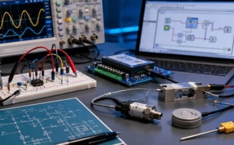
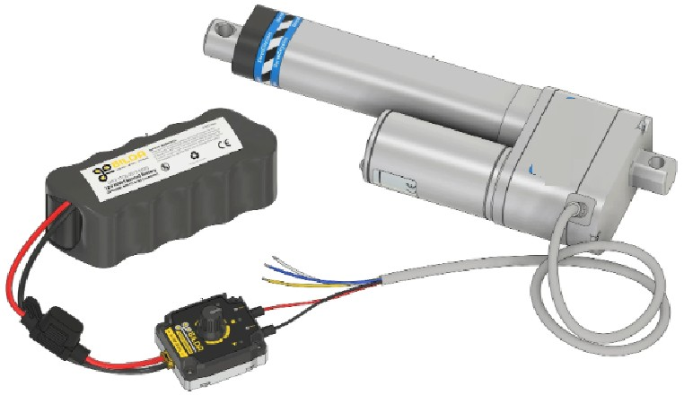
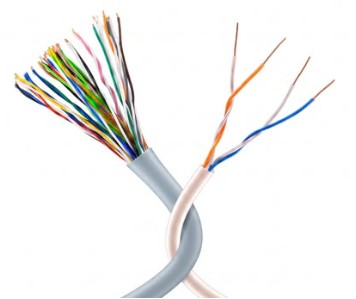
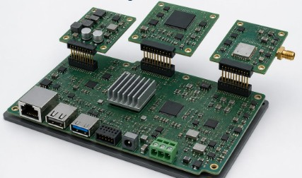

Sensor Signal Conditioning and Acquisition
We design sensor interface circuits that prepare electrical signals for processing by microcontrollers and embedded control systems. Depending on the sensor and application, this can involve signal amplification, filtering, voltage scaling, and analog-to-digital conversion. These functions help ensure that sensor outputs are compatible with the controller's input requirements. We also consider measurement range, signal noise, electrical characteristics, and operating conditions when developing sensor interfaces. By addressing these factors, we aim to support reliable data acquisition and provide the controller with usable information for monitoring, measurement, and control functions.
Our capabilities can include:
Actuator Drive and Control Interfaces
Actuators convert electrical signals into physical actions, including movement, switching, and mechanical operation. We develop electronic interface circuits that allow embedded controllers to operate compatible actuators according to the requirements of the application. Depending on the device, the interface may require transistor-based drivers, relay circuits, motor drivers, or pulse-width modulation (PWM) control. We consider voltage, current, switching requirements, and appropriate electrical protection to ensure that the interface is suited to both the controller and the connected actuator.
Our capabilities can include:
Electrical Protection and Signal Reliability
Sensor and actuator interfaces must operate reliably under the electrical conditions of their intended application. At Cynex System, we consider potential challenges such as voltage fluctuations, electrical noise, current overloads, and transient disturbances when designing interface circuits. Appropriate protection and filtering techniques can help safeguard connected electronics and maintain stable signal behavior. Depending on the application, interface designs may incorporate current limiting, transient voltage suppression, filtering, or electrical isolation. Selecting suitable protection methods requires consideration of the connected devices, circuit characteristics, and operating environment.
Our capabilities can include:
Custom Interface PCB Design and Integration
We develop custom interface PCB solutions that connect sensors, actuators, and embedded controllers within a unified electronic system. By integrating the required interface circuits onto a dedicated board, we can help simplify wiring, organize connections, and accommodate the electrical requirements of different devices. The design can include connectors, signal conditioning circuits, actuator drivers, power interfaces, and communication connections according to the application. We also consider board dimensions, component placement, electrical compatibility, and accessibility to support practical integration into the final equipment.
Our capabilities can include:



